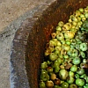
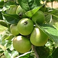
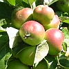
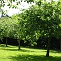
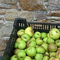

|  |  |  |  |
 |  |
Les pommes sont un frit tch'a 'té bein împortant dans l'histouaithe et la tchultuthe dé Jèrri. Ouaithe qu'les gardîns à pommièrs aient 'té rempliaichis par des cliôsées d'patates et qué l'cidre né sait pon populaithe aniet comme au temps pâssé, y'a acouo d'l'întéthêt dans la tchultivâtion d'pommes.
 Nou dit qué, dans l'Gardîn d'Êden, Âdam et Êve mangîtent eune pomme, mais dans la Bibl'ye ch'n'est pon êcrit qu'lé frit d'fendu 'tait eune pomme, ni qu'l'arbre 'tait un pommyi.
Nou dit qué, dans l'Gardîn d'Êden, Âdam et Êve mangîtent eune pomme, mais dans la Bibl'ye ch'n'est pon êcrit qu'lé frit d'fendu 'tait eune pomme, ni qu'l'arbre 'tait un pommyi.
|
Et Dgieu li dit, "Tch'est qui t'a montré qué tu'étais nu? Est-che qué tu'as mangi du bouais qué J't'avais d'fendu d'mangi?" Et Adam rêponnit, "La femme qué Tu m'as donné pour être auvec mé, m'a donné du fruit du bouais, et j'en ai mangi." (Genêse)
|
Chutte tradition veint probabliément du fait qu'en Latîn la pomme a nom “malum” tchi fait penser, coumme dé raîson, à du ma.
Tch'est qu'nou fait auve les pommes, s'i' n'sont pon d'fendues? Les bourdélots, lé nièr beurre et l'cidre - touos des produits bein traditionnels et Jèrriais.
| des tchêtinnes | windfalls |
| d's êcaûdillons | unripe windfalls |
| des louochies | fruit shaken from the tree |
| eune pomme douoche | eating apple |
| eune pomme suthe | cooking apple |
| eune pomme dé garde | apple for winter storage |
| eune pomme dé tabl'ye | table apple |
| eune pomme à cidre | cider apple |
| un pépîn | pip |
| la p'liche | peel |
| lé pid d'pomme | stalk |
des tchêtinnes
Viyiz étout:
{kind=link}